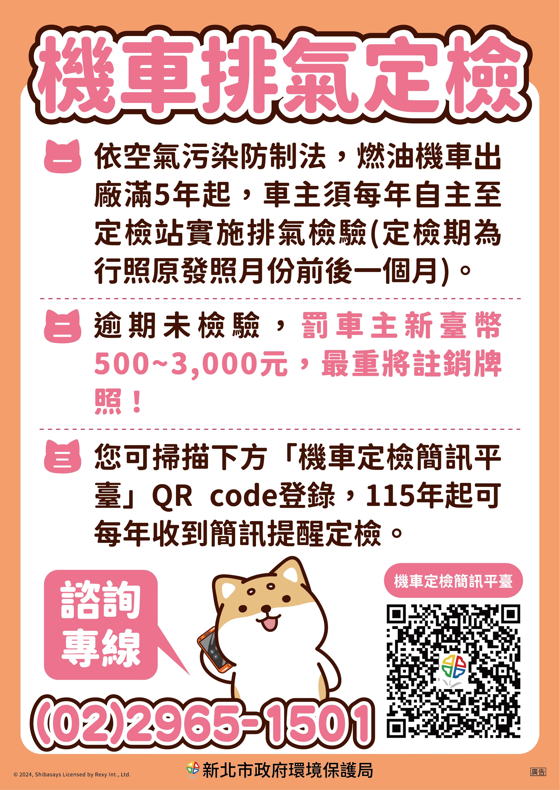
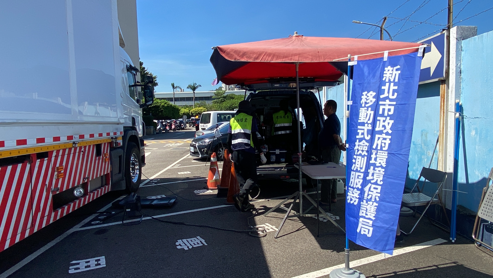
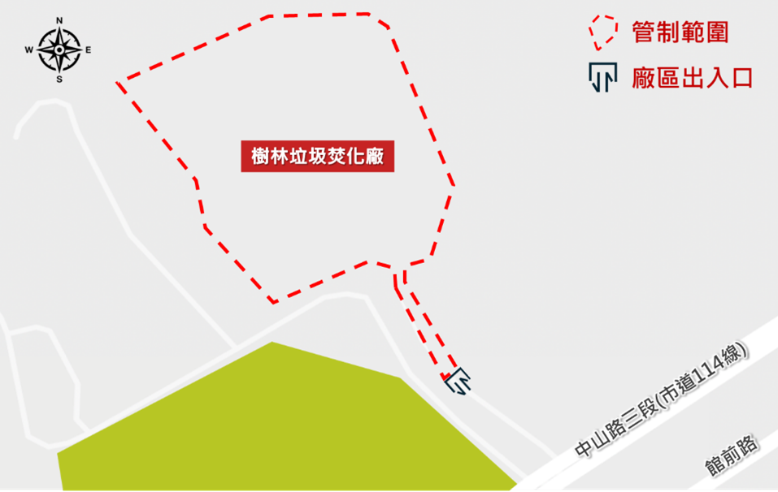
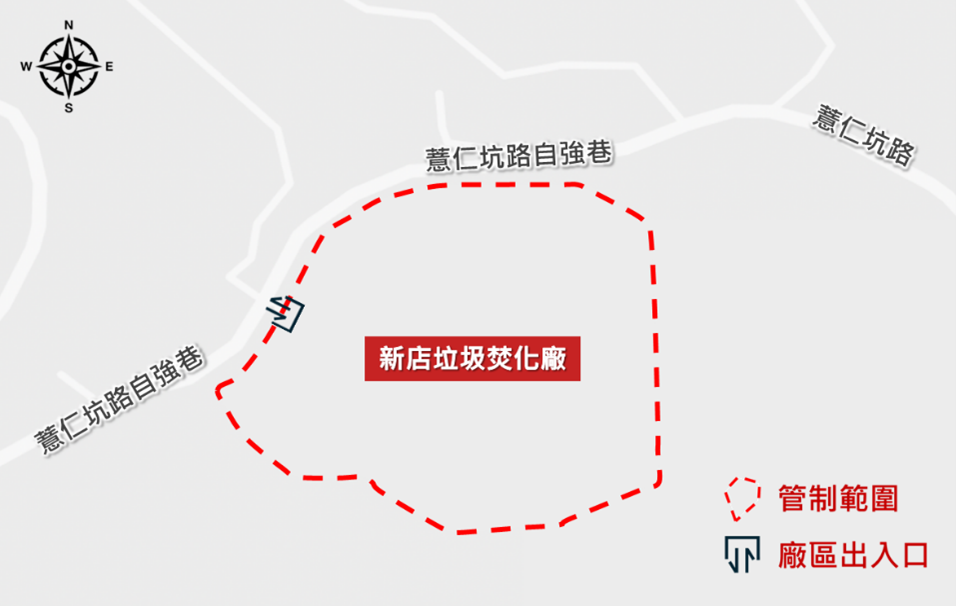
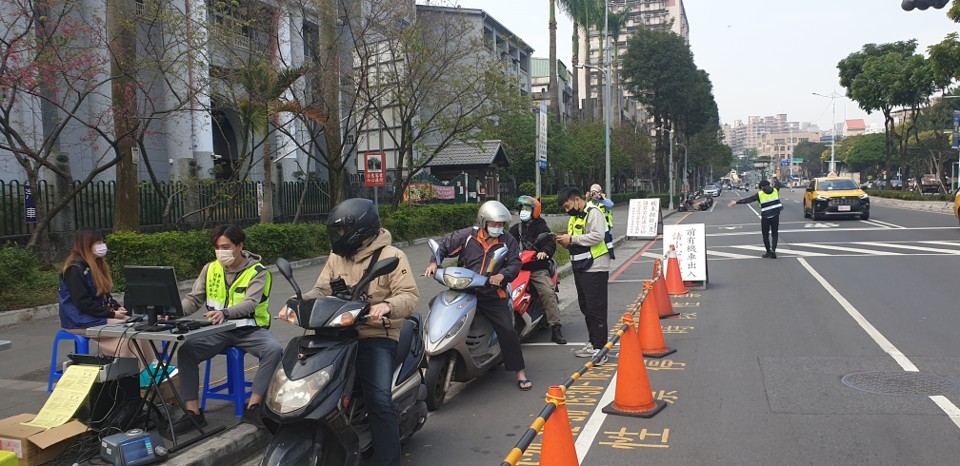

柴油車定期檢驗
曾由主管機關檢驗不符合排放標準，修復複驗合格或完成改善後，次年起連續 2 年每年檢驗 1 次；檢驗時間為行照原發照月份前後 1 個月，定期檢驗目前免費。
NEW TAIPEI · MOBILE SOURCE CONTROL
整合機車排氣定檢、柴油車排煙檢測、空氣品質維護區與高污染車輛稽查資訊， 用民眾看得懂的方式整理「什麼時候要驗、哪裡有管制、收到通知怎麼辦」。
QUICK GUIDE
不必先讀法規，先用一分鐘確認自己最需要知道的資訊。
MOTORCYCLE INSPECTION
凡在臺灣設籍且出廠滿 5 年以上的機車，每年都應在行照原發照月份「前後 1 個月」完成排氣定檢。 即使平常很少騎、沒有收到提醒簡訊，也仍要主動完成定檢。
可檢驗期間就是 2 月 1 日～4 月 30 日，不用等到 3 月才去驗。
新北市自 115 年 1 月 1 日起停止寄發紙本定檢提醒明信片，改採簡訊通知。 民眾可到「新北市機車定檢簡訊平臺」登錄車號與手機號碼；同一手機可綁定多組車號。 即使沒有收到通知，依法仍須主動完成定檢。

AFTER INSPECTION
第一次不合格後，重點是「1 個月內修復並複驗合格」。
先確認 CO、HC 等檢測結果，建議至熟悉的車行檢查保養。
完成必要調修後，再回到認可定檢站辦理複驗。
完成合格紀錄後，才算完成當次檢驗程序。

DIESEL VEHICLE
柴油車的管理分成「定期檢驗」與「通知到檢／不定期檢驗」。不是所有柴油車都固定每年排煙檢測； 曾經主管機關檢驗不合格，後續完成修復複驗合格或改善者，才會從次年起連續 2 年每年定檢 1 次。
新北環保局與臺北區監理所合作，柴油車可在辦理車輛安全檢驗後接續做排煙檢測。 官方公開資訊載明服務為每月第三、四週星期三，上午 9:30–12:00、下午 13:30–16:30； 實際場次仍請以最新公告為準。
DIESEL DETAILS
兩種制度的原因與處理方式不同，先確認自己收到的是哪一種。
曾由主管機關檢驗不符合排放標準，修復複驗合格或完成改善後，次年起連續 2 年每年檢驗 1 次；檢驗時間為行照原發照月份前後 1 個月，定期檢驗目前免費。
使用中柴油車經目視判煙、民眾檢舉或其他稽查方式發現有污染之虞時，主管機關可通知車主在指定期限內完成檢驗。
確認車號、檢測期限與通知內容，不要等到最後一天才處理。
若有漏油、異音、輪胎嚴重磨損或污染控制設備異常，建議先維修保養。
車輛若不在新北，可在期限內至其他縣市環保局排煙檢測站檢測，再依規定回傳結果。
務必在原檢測期限前提出申請並附佐證；新北 FAQ 載明展延以 1 次、最多 14 日為原則。
AIR QUALITY MAINTENANCE ZONE
可以把空維區想成「重點空氣保護區」：針對特定高污染車輛與機具加強進出管理。
包含臺61線、臺15線部分路段、臺北港、八里焚化廠、八里掩埋場及林口發電廠等範圍。
範圍以民生路二段、文化路一段至南門街、館前西路、中山路一至二段及前述道路所圍區域為主。
樹林、新店垃圾焚化廠區及出入口道路自 115 年 2 月 1 日起納入空維區，並採全時段智慧監控。


HIGH POLLUTION VEHICLE
新北市透過固定式與移動式車牌辨識、路邊攔查、遙測與資料比對， 鎖定未定檢或疑似高污染車輛，再由稽查與檢測確認是否違規。
新北環保局曾於臺北港導入柴油車污染遙測結合即時車牌辨識， 兩週檢測 4,851 輛次，篩出 109 輛疑似高污染車輛，再納入黑名單進行即時攔查。 這類數字屬特定期間案例，不代表目前累計值。

CITIZEN REPORT
拍攝前先確認條件，避免因資料不足無法受理。
在新北市轄內發現有污染之虞車輛後，應於 15 日內提出檢舉。
照片或影片應能判別日期、時間、地點、車號及車種。
官方 FAQ 載明可提供至少 3 張行進中清晰照片，或 15 秒以下行進中影片。
怠速停等、起步、發動、夜間、逆光、下雨或路面潮濕等情況不適合作為判煙資料。
FAQ
把法規語言換成比較容易理解的說法。
要。提醒簡訊是便民服務，不是定檢義務成立的條件。只要機車符合出廠滿 5 年規定，就應在原發照月份前後 1 個月主動定檢。
不必限定新北市，可至環保機關認可的機車排氣定檢站辦理，建議先用環境部機車定檢資訊系統查詢附近站點。
不是。現行柴油車定檢對象主要是曾經主管機關檢驗不合格、後續完成修復複驗合格或改善者，次年起連續 2 年每年定檢 1 次。
可在檢測期限內就近至其他縣市環保局設立的排煙檢測站辦理，完成後再依通知方式回傳檢測結果。
先確認自己的車種是否屬於管制對象。柴油車應確認規定期限內排煙合格紀錄；燃油機車則確認當年度定檢是否完成；施工機具確認清潔排放標章是否有效。
不一定。案件仍需依照片、影片品質與拍攝情境審查。怠速、起步、發動、夜間、逆光、下雨或路面潮濕等情況較容易造成誤判，不適合作為判煙資料。
CITIZEN SERVICE
需要查詢、登錄或看正式規定，可以從這裡直接前往。
本頁依新北市政府環境保護局、環境部公開資訊整理成便民版。 管制範圍、檢測期限、補助名額與法規可能調整，實際仍以主管機關最新公告及個案通知為準。 官方圖片均於圖說標示來源。
OFFICIAL CONTACT
新北市政府環境保護局
地址：新北市板橋區民族路 57 號
電話諮詢時間：週一至週五 08:30–12:00、13:30–17:30
本頁為網站範本，正式發布前請更新聯絡方式及公告內容。